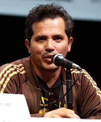
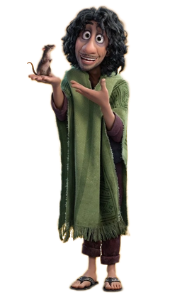
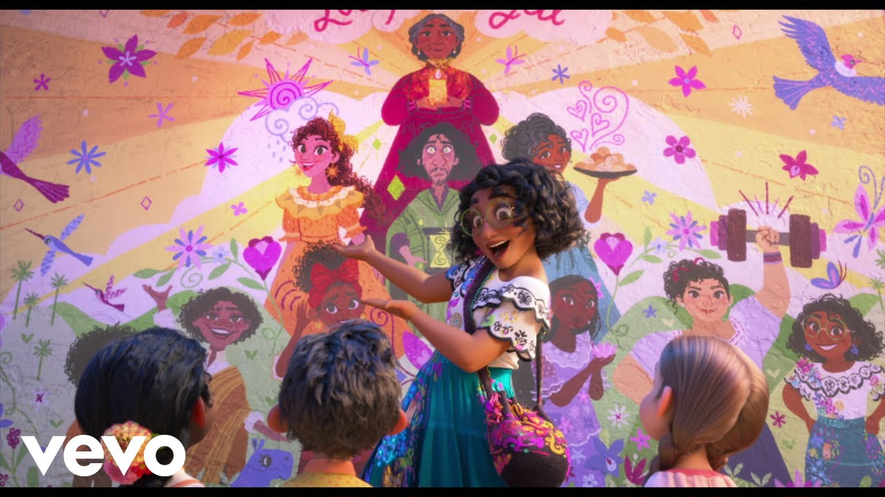
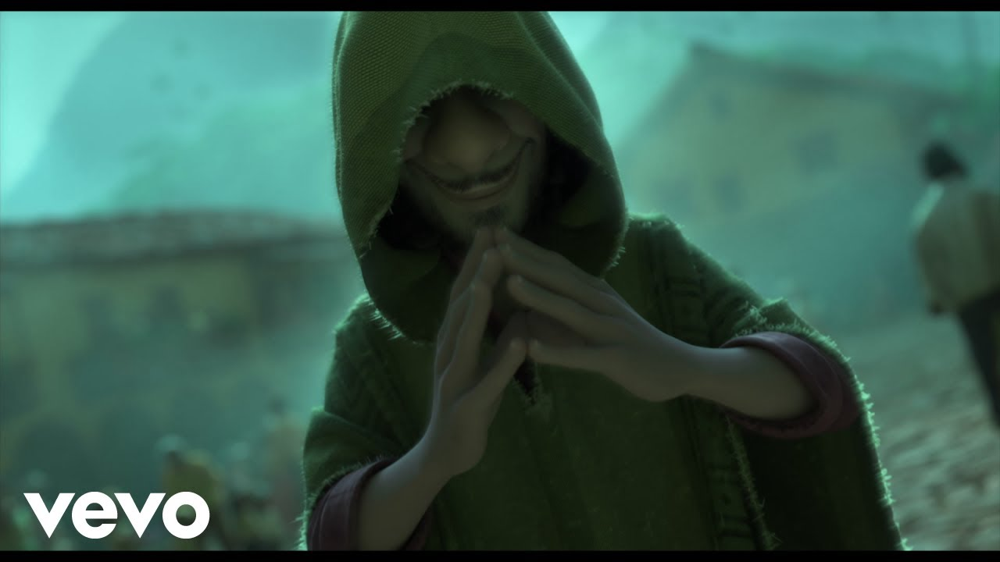
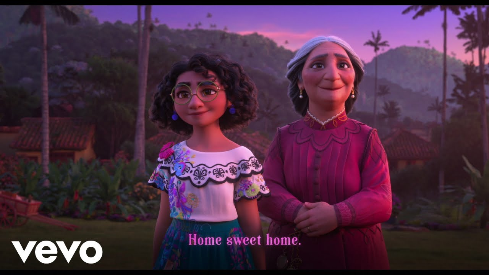
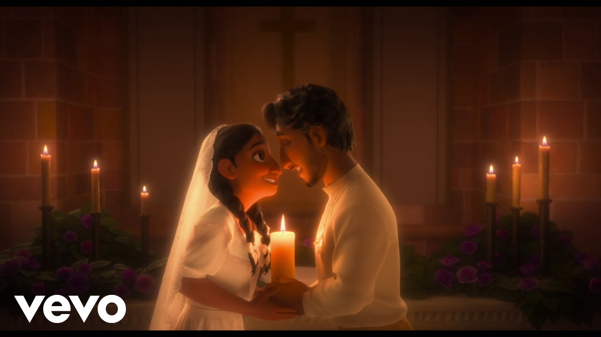

演艺经历
2014年，出演CW电视台剧集《处女孕事》 。
2017年，格雷罗在《超级甜甜圈》的第二季中饰演主要角色Sofia 。
2018年7月，格雷罗加盟流媒体平台DC宇宙的剧集《末日巡逻队》，饰演疯狂的简。
2022年，参与动画电影《魔法满屋》配音 ；12月8日，出演的剧集《末日巡逻队第四季》开播。
约翰·莱吉萨莫

在动画电影《魔法满屋》中为布鲁诺·马利加配音。
约翰·阿尔韦托·莱吉萨莫·佩莱斯（西班牙语：John Alberto Leguizamo Peláez）出生于1962年7月22日，生于哥伦比亚，4岁移居美国，现为美国影视演员。
高中时期即参与喜剧创作，后于大学继续修习表演艺术，毕业后于纽约参加多部百老汇舞台剧演出，曾获东尼奖。另外，他也参与其他不同演出方式的电影参与，例如于动画电影《冰原历险记2》担任主要配音工作。
演艺经历
2022年4月23日，参演的《幸存者》在HBO首映；参与动画电影《魔法满屋》配音；参演电影《菜单》；参演电影《暴力之夜》。
2023年3月31日，参演的电视剧《电击少女 第一季》播出。
个人生活
电影角色
角色介绍
米拉贝·马利加

米拉贝·马利加是一位虚构的角色，出现在华特·迪士尼动画工作室的第60部动画电影《魔法满屋》（2021年）中。由导演拜伦·霍华德（Byron Howard）和贾里德·布什（Jared Bush）创作，米拉贝被描绘为一个不完美、古怪、感性和富有同情心的15岁少女，她是马德里加尔家族中唯一没有获得魔法天赋的成员。当他们的“奇迹”开始消失时，米拉贝尔决定自己拯救魔法，了解到自己家族的困扰。
从角色的初始发展开始，米拉贝被构想为家族中唯一没有天赋的成员。电影的初稿情节描绘了她拼命寻找天赋，但角色的动机被调整为渴望被注意到，因为这被认为更贴近观众的情感。米拉贝的外貌基于导游Alejandra Espinosa Uribe的形象；米拉贝的设计始于她的裙子，其精美的刺绣代表了她的个性。美国女演员斯蒂芬妮·贝特丽兹（Stephanie Beatriz）为米拉贝配音；贝特丽兹最初试镜路易萨（Luisa）的角色，但后来被认为是米拉贝的完美选择。
伊莎贝拉·马利加
以伊莎贝拉·马利加（Isabela Madrigal）为名的虚构角色出现在沃尔特·迪士尼动画工作室的第60部作品《魔法满屋》（2021）中。伊莎贝拉被描绘为表面完美但其实自以为是的角色，拥有使花朵生长的能力。然而，她的妹妹，米拉贝发现她在完美主义的期望下挣扎。在米拉贝的帮助下，她意识到了自己的不完美之处，开始培育除花朵之外的其他植物。
导演拜伦·霍华德（Byron Howard）和贾里德·布什（Jared Bush）以家庭中被宠坏的孩子为原型，创作了这个角色。因此，她被写成是马利加家族的长孙。她的能力的创造灵感来源于某位顾问要求《魔法满屋》突出展现自然和流行的哥伦比亚花卉，她的服装创作也受到该国花卉节日的影响。女演员戴安·格雷罗（Diane Guerrero）表示她在某种程度上体现了这个角色，并为伊莎贝拉的声音提供了配音。
布鲁诺·马利加
布鲁诺·马利加是迪士尼于2021年推出的动画电影《魔法满屋》中的重要角色。他是艾玛和佩德罗·马利加的独生儿子，也是胡莉叶塔和佩帕最年幼的弟弟。他被赋予了预知未来的能力。
布鲁诺奇怪的举止、对老鼠的喜好以及经常预言末日的预言使他成为马利加家中的“害群之马”，导致他与家人疏远。在他失踪后，提及布鲁诺成为了禁忌，城里的居民对他嗤之以鼻。他也被视为邪恶的人物，直到人们发现了他对家人深刻的爱。
歌曲
此电影的音乐是由林-曼努埃尔·米兰达和家杰曼·弗兰科创作，其中包括八首原创歌曲，既有西班牙语又有英语。在电影首映后，他透露自己从一开始就一直在为电影写歌曲。
以下是《Encanto》的一些歌曲：
1. The Family Madrigal
点击这里听听!
[唱者：Stephanie Beatriz, Olga Merediz, Encanto - Cast]
意义：这首歌表现了米拉贝演唱这首歌来向观众介绍电影的核心角色——马利加家庭——以及他们的神奇“礼物”。林-曼努埃尔·米兰达表示这首歌受到1991年《美女与野兽》中的开场歌“Belle”启发而创作。
2. Surface Pressure
点击这里听听!
[唱者：Jessica Darrow]
意义：在这首歌中，露易萨·马利加表达了作为家庭的“支撑者”并不如表面所见，她承受着家人们对她的期望，每个人都依赖着她，这给她带来了巨大的压力。
We Don’t Talk About Bruno
点击这里听听!
[唱者：Encanto - Cast]
意义：这首歌曲是有关米拉贝被排挤的叔叔– 布鲁诺·马利加的闲聊和轶事。他的能力是预知未来，但因所预言的都与不幸有关，因此使他与马利加家族疏远。这首歌曲中，一些家庭成员和镇上的居民向米拉贝解释为什么他们害怕他的预言。这首歌曲暗示布鲁诺是邪恶的，但通过列举其他角色对这个“反派”的看法，它摆脱了传统的迪士尼反派歌曲的叙事风格。
What Else Can I Do?
点击这里听听!
[唱者：Diane Guerrero, Stephanie Beatriz]
意义：这首歌表现了米拉贝和他的姐姐，伊萨贝拉。伊萨贝拉的能力是召唤花草树木，他平时表现得很优雅（导致家人和乡亲们都公认他是一位“毫不费力完美”的少女）。在这首歌里，伊萨贝拉发觉到即使自己尽了所有的力达到“完美”的境界，其实还有其他的方式可以利用自己的能力展现最真实，最有创意的自己。
All Of You
点击这里听听!
[唱者：Encanto - Cast]
意义：在这首歌里，米拉贝和他的奶奶，艾玛·马利加达成了共识，并一起回到以废墟的房子，与其他马利加家庭成员重聚，并一起面对他们家庭的未来。此外，乡亲们主动帮忙马利加家庭重建他们倒闭的屋子，表现了乡亲们的社会精神和对马利加家庭多年帮组他们的感恩之心。《All Of You》不但强调了戏里角色的旅程还展现了马利加家庭治愈代际创伤的主题。
Dos oruguitas
点击这里听听!
[唱者：Sebastián Yatra]
意义：这首歌在一个重要的闪回场景中播放，米拉贝了解了她祖母艾玛的生活和她所经历的艰辛——从她与丈夫佩德罗的浪漫，到他们作为夫妻为从战争拯救和保护家人与乡亲而必须做出的牺牲。这首歌的歌词讲述了两只毛毛虫在不得不放手之前相爱的故事，对艾玛和佩德罗生活中发生的事件的隐喻。
幕后工作人员
导演
1.拜倫·霍華德（英語：Byron Howard，1968年12月26日—）[1]是一位美國動畫導演，同時也曾為華特迪士尼動畫工作室擔任編劇、監製、動畫師及配音員等。他參與執導的作品包括《雷霆戰狗》、《魔髮奇緣》和《動物方城市》等迪士尼經典動畫長片，且曾擔任電影《星際寶貝》和《熊的傳說》的動畫監督。他曾於2010年因《魔髮奇緣》一作被提名金球獎。[2]
2.傑瑞·布希（英語：Jared Bush，1974年6月12日—）是一位美國動畫師、編劇兼電影導演。他知名於參與Disney XD頻道的動畫影集《Penn Zero：太空英雄》的製作、以及和拜倫·霍華德及里奇·摩尔等人共同執導迪士尼動畫工作室的經典動畫長片《動物方城市》。
监制
1.克拉克·斯潘塞（英語：Clark Spencer，1963年4月6日—）是一名出生於美國華盛頓州西雅圖的電影製片人、實業家及工作室執行。他主要知名於在迪士尼動畫工作室的作品。 斯潘塞曾在1990年代初期協助華特迪士尼公司收購米拉麥克斯影業，並於1993年加入迪士尼動畫工作室。他原先是工作室的計畫督導（director of planning），後來成為商業及行動部門的副總理。2002年，他又前往迪士尼位於佛羅里達州的動畫製作部門，並在《星際寶貝》的製作期間擔任製片人及工作室的領導人。[1][2]自從該片之後，斯潘塞便擔任了許多迪士尼動畫電影的監製，包括《雷霆戰狗》、《小熊維尼大電影》及《無敵破壞王》等。[3] 斯潘塞於1985年自哈佛大學畢業，並取得歷史學位。
2.伊維特·梅里諾·弗洛雷斯
编剧
1.傑瑞·布希
2.查理斯·卡斯特羅·史密斯
故事
1.傑瑞·布希
2.拜倫·霍華德
3.查理斯·卡斯特羅·史密斯
4.南希·克魯斯
5.林-曼努爾·米蘭達
6.Jason Hand
配乐
林-曼努爾·米蘭達（英語：Lin-Manuel Miranda，/lɪn mænˈwɛl məˈrændə/，1980年1月16日—）[1]是一名美國男作曲家、作詞家、歌手、演員、劇作家、製片人及導演，以創作兼主演百老匯音樂劇《身在高地》及《漢密爾頓》而聞名。 米蘭達為2008年百老匯音樂劇《身在高地》創作了音樂和歌詞。他的作品獲得了東尼獎最佳原創音樂[2]、葛萊美獎最佳音樂劇專輯[3]，而戲劇本身則贏得了東尼獎最佳音樂劇；米蘭達也以主角身份入圍了最佳音樂劇男主角。自從為《漢密爾頓》編寫劇本、音樂和歌詞以來，他和該劇都獲得了外界高度讚譽；從2015年在百老匯首演以來，《漢密爾頓》還引發了一股流行文化[4]。 在影視界，米蘭達參與過的知名作品如電視劇《電氣公司》（2009年至2010年）、《善恶双生》（2013年）、電影《STAR WARS：原力覺醒》（2015年）和《愛·滿人間》（2018年）。他為2016年動畫電影《海洋奇缘》創作的歌曲〈海洋之心〉贏得了金球獎最佳原創歌曲與奥斯卡奖最佳原创歌曲。
摄影
1.內森·華納（編排）
2.亞歷山德羅·雅科米尼
3.丹尼爾·賴斯（燈光）
剪辑
傑里米·米爾頓
制片商
1.华特迪士尼影片（Walt Disney Pictures）， 2011年后简称为迪士尼影片（Disney）是華特迪士尼公司的最重要的电影发行品牌。在此品牌下，迪士尼发行了许多优秀的动画片与真人片。动画片当中，截至目前，由迪士尼动画片场（Walt Disney Feature Animation）制作了60部经典动画长片。
2.華特迪士尼动画工作室（英語：Walt Disney Animation Studios）是一个总部位于美国加州伯班克的动画工作室。它以此名义成立于1923年，并于1929年重新建立成为迪士尼兄弟动画工作室，隶属于华特迪士尼公司。它一直为迪士尼公司生产动画电影（动画长片）。
ENCANTO 荣誉
| 票房 | 2.488亿美金 |
| 评价 | 平均得分4.6/5 |
| 奖项 | 奥斯卡最佳动画片奖 |
| 音乐奖项 | 《Dos Oruguitas》奥斯卡最佳原创音乐奖和奥斯卡最佳原创歌曲奖 |